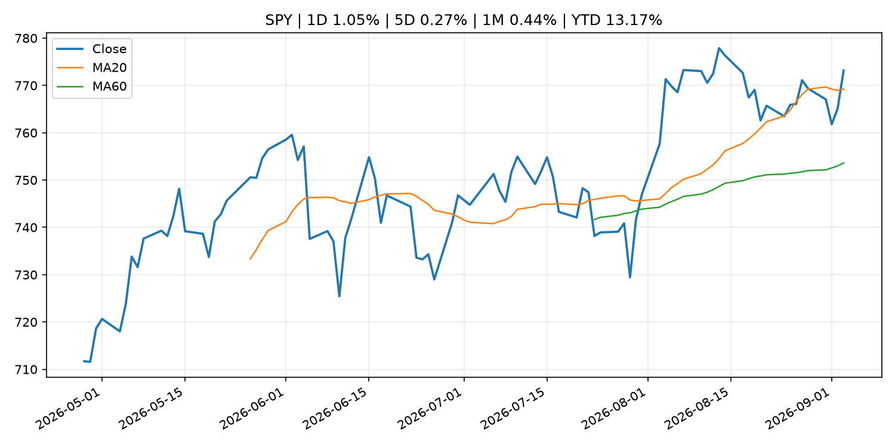
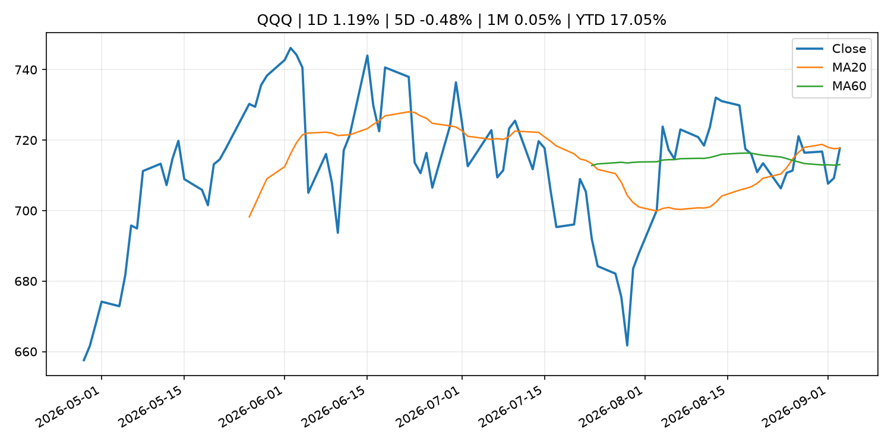
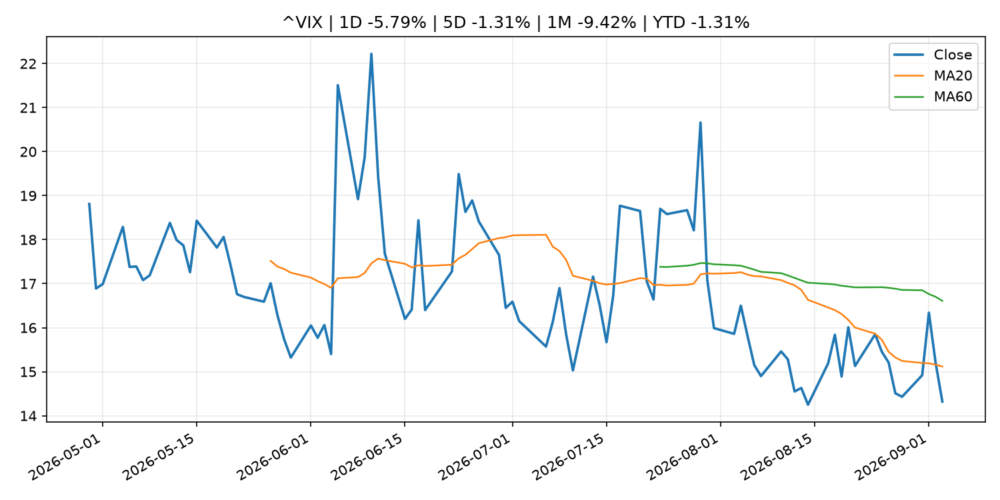
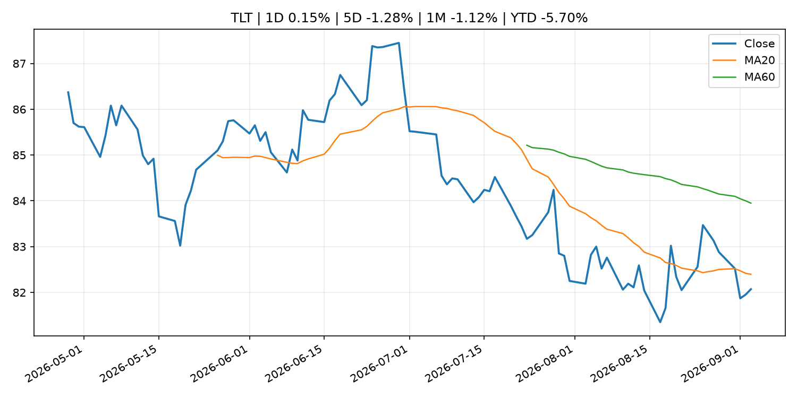
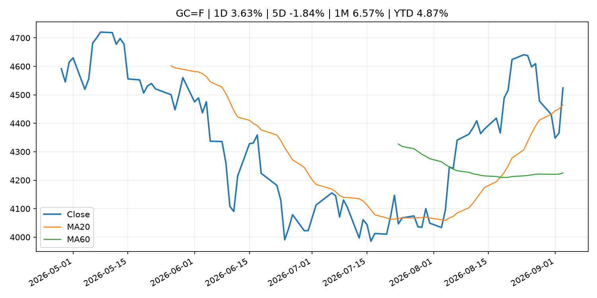
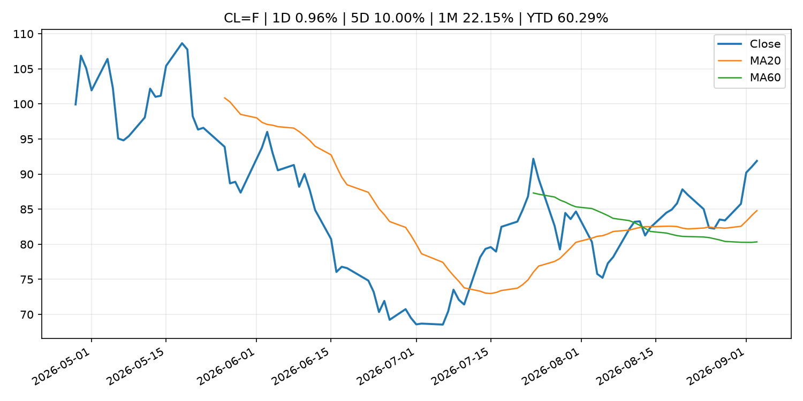
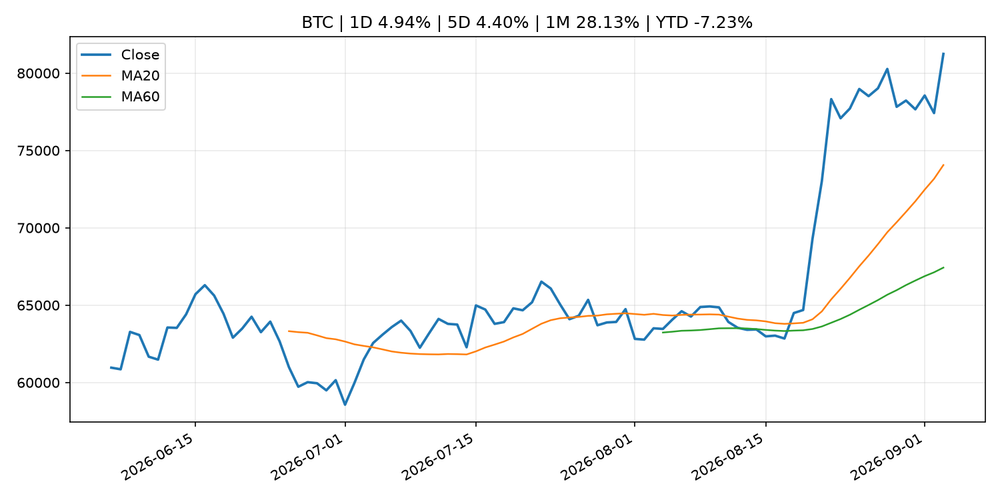
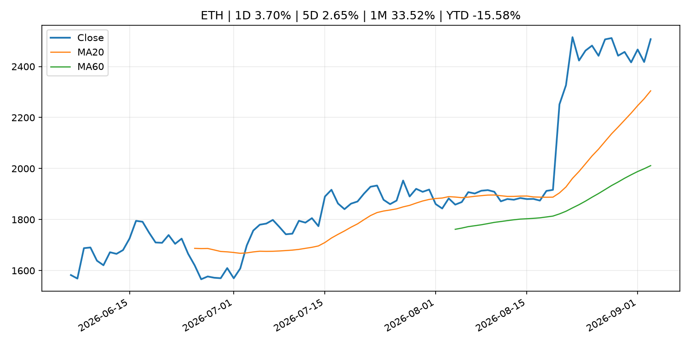
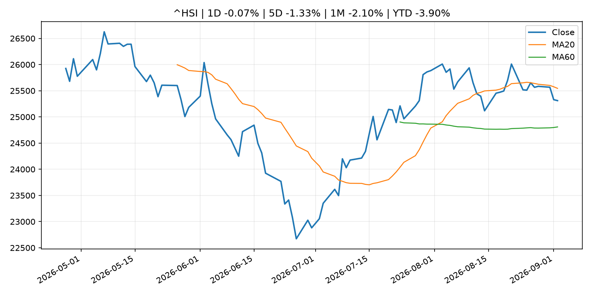

Global Macro Morning Briefing - 2026-09-04
Not financial advice / 非投资建议。
0. 今日总览
- 市场状态：risk_on。股指上涨、波动率或美元回落，市场更接近风险偏好改善。
- 今日三大主线：
- central_bank_decision: New York Fed's Williams says yield surge due to strong economic prospects
- fiscal_policy: China hits back at G20 statement on its reliance on exports, accusing them of 'promoting protectionism'
- earnings: Here’s what Nvidia’s $13 billion Hugging Face deal means for the world of AI
- 一句话结论：今日晨报重点关注：央行决策会重定价利率、汇率、久期资产和风险资产。；财政和贸易政策会影响增长、通胀、企业利润和跨境资本流。。跨资产方面，SPY 1D 1.05%；QQQ 1D 1.19%；^VIX 1D -5.79%；TLT 1D 0.15%；GC=F 1D 3.63%；CL=F 1D 0.96%；BTC 1D 4.94%；ETH 1D 3.70%；股指上涨、波动率或美元回落，市场更接近风险偏好改善。政策、通胀、利率、美元、美债、能源和加密监管仍是主要观察线索。所有结论仅基于公开数据与短摘要整理，不构成投资建议。
1. 隔夜跨资产市场
- 美股：SPY 1D 1.05%，QQQ 1D 1.19%，整体趋势需结合 VIX 和利率确认。
- 美债/美元：TLT 1D 0.15%，美元指数 1D -0.53%，是判断折现率压力的核心线索。
- 黄金/原油：黄金 1D 3.63%，原油 1D 0.96%，用于观察避险、通胀和地缘风险。
- 加密：BTC 1D 4.94%，ETH 1D 3.70%，关注是否独立于纳指走出加密自身行情。
- 港股/A股：恒生 1D -0.07%，沪深300/上证 1D n/a，重点看中国政策预期与人民币线索。
- 风险观察：确认风险偏好是否扩散到小盘股、信用利差和周期品。
US_EQUITY
| symbol | latest close | 1D | 5D | 1M | YTD | trend |
|---|---|---|---|---|---|---|
| SPY | 773.17 | 1.05% | 0.27% | 0.44% | 13.17% | uptrend |
| QQQ | 717.67 | 1.19% | -0.48% | 0.05% | 17.05% | range_bound |
| DIA | 536.93 | 1.19% | 0.32% | -1.08% | 11.02% | uptrend |
| IWM | 295.19 | 0.40% | -1.54% | -1.53% | 18.66% | range_bound |
| VTI | 380.93 | 1.07% | 0.08% | 0.34% | 13.27% | uptrend |
US_MACRO_MARKET
| symbol | latest close | 1D | 5D | 1M | YTD | trend |
|---|---|---|---|---|---|---|
| ^VIX | 14.32 | -5.79% | -1.31% | -9.42% | -1.31% | downtrend |
| DX-Y.NYB | 99.03 | -0.53% | -0.13% | -0.66% | 0.62% | downtrend |
| TLT | 82.07 | 0.15% | -1.28% | -1.12% | -5.70% | downtrend |
| IEF | 92.28 | 0.11% | -1.02% | -1.10% | -3.96% | downtrend |
COMMODITIES
| symbol | latest close | 1D | 5D | 1M | YTD | trend |
|---|---|---|---|---|---|---|
| GC=F | 4,524.70 | 3.63% | -1.84% | 6.57% | 4.87% | strong_uptrend |
| SI=F | 67.59 | 4.43% | -2.65% | 8.84% | -4.20% | strong_uptrend |
| CL=F | 91.88 | 0.96% | 10.00% | 22.15% | 60.29% | strong_uptrend |
| BZ=F | 95.91 | 0.29% | 6.92% | 20.72% | 57.88% | strong_uptrend |
| NG=F | 2.93 | -1.01% | 0.65% | 8.85% | -19.13% | range_bound |
| HG=F | 6.68 | 2.69% | 1.35% | -0.40% | 18.37% | uptrend |
HK_MARKET
| symbol | latest close | 1D | 5D | 1M | YTD | trend |
|---|---|---|---|---|---|---|
| ^HSI | 25,311.21 | -0.07% | -1.33% | -2.10% | -3.90% | range_bound |
| 0700.HK | 433.00 | -1.19% | -3.31% | -12.03% | -30.50% | downtrend |
| 9988.HK | 107.50 | -2.18% | -6.93% | -16.08% | -27.85% | range_bound |
| 3690.HK | 77.65 | -1.40% | 0.19% | -16.55% | -25.76% | range_bound |
| 1810.HK | 27.44 | -2.21% | -0.15% | -0.72% | -31.88% | uptrend |
| 1211.HK | 85.70 | 0.53% | -6.08% | -8.64% | -13.22% | range_bound |
CRYPTO
| symbol | latest close | 1D | 5D | 1M | YTD | trend |
|---|---|---|---|---|---|---|
| BTC | 81,242.50 | 4.94% | 4.40% | 28.13% | -7.23% | strong_uptrend |
| ETH | 2,507.23 | 3.70% | 2.65% | 33.52% | -15.58% | strong_uptrend |
| SOLANA | 103.96 | 4.00% | -0.14% | 37.59% | -16.51% | strong_uptrend |
| BINANCECOIN | 724.49 | 6.13% | 4.80% | 18.82% | -16.02% | strong_uptrend |
| RIPPLE | 1.45 | 7.22% | 4.74% | 44.25% | -21.27% | strong_uptrend |
2. 今日最重要的 10 条新闻
1. New York Fed's Williams says yield surge due to strong economic prospects
- 来源：CNBC Economy
- 时间：2026-09-02T17:21:59+00:00
- 地区：US
- 事件类型：central_bank_decision
- 重要性层级：Tier 1
- 一句话摘要：New York Fed President John Williams said higher Treasury yields reflect a strong economy as he weighs whether another interest rate hike is needed.
- 为什么重要：央行决策会重定价利率、汇率、久期资产和风险资产。
- 可能影响：主要影响 QQQ，方向为 negative，强度 high；鹰派政策提高折现率，压制成长股估值。
- 资产：QQQ 方向：negative 强度：high 原因：鹰派政策提高折现率，压制成长股估值。
- 资产：SPY 方向：negative 强度：medium 原因：更紧政策通常削弱风险偏好。
- 资产：TLT 方向：negative 强度：high 原因：利率上行通常压低长债价格。
- 资产：DXY 方向：positive 强度：high 原因：更高利率预期通常支撑美元。
- 资产：BTC 方向：negative 强度：high 原因：流动性收紧通常压制高 beta 加密资产。
- 原文链接：https://www.cnbc.com/2026/09/02/new-york-feds-williams-says-yield-surge-due-to-strong-economic-prospects.html
2. China hits back at G20 statement on its reliance on exports, accusing them of 'promoting protectionism'
- 来源：CNBC Economy
- 时间：2026-09-03T11:12:54+00:00
- 地区：US
- 事件类型：fiscal_policy
- 重要性层级：Tier 1
- 一句话摘要：China rejected G20 pressure over export-driven growth while also challenging U.S. Iran sanctions and European trade measures.
- 为什么重要：财政和贸易政策会影响增长、通胀、企业利润和跨境资本流。
- 可能影响：可能影响利率、汇率、风险资产或大宗商品预期，但当前公开信息不足以判断明确方向。
- 资产：暂无明确资产映射
- 方向：unknown
- 强度：low
- 原因：公开信息不足以判断方向。
- 原文链接：https://www.cnbc.com/2026/09/03/china-g20-exports-trade.html
3. Here’s what Nvidia’s $13 billion Hugging Face deal means for the world of AI
- 来源：MarketWatch Top Stories
- 时间：2026-09-03T21:34:00+00:00
- 地区：US
- 事件类型：earnings
- 重要性层级：Tier 2
- 一句话摘要：The acquisition will give Nvidia access to “one of the most important parcels of real estate in the AI market” and promote open-source technology.
- 为什么重要：大型科技股盈利和资本开支会影响纳指、半导体和 AI 交易主线。
- 可能影响：主要影响 QQQ，方向为 mixed，强度 high；AI 资本开支会影响大型科技股盈利和估值预期。
- 资产：QQQ 方向：mixed 强度：high 原因：AI 资本开支会影响大型科技股盈利和估值预期。
- 资产：SMH 方向：mixed 强度：high 原因：AI 投资周期直接影响半导体需求。
- 资产：NVDA 方向：mixed 强度：high 原因：AI 训练和推理需求是英伟达收入预期核心变量。
- 资产：MSFT 方向：mixed 强度：medium 原因：云和 AI 资本开支影响利润率与增长叙事。
- 资产：GOOGL 方向：mixed 强度：medium 原因：AI 投资和搜索商业化影响估值。
- 资产：META 方向：mixed 强度：medium 原因：AI 基建支出与广告效率共同影响市场预期。
- 原文链接：https://www.marketwatch.com/story/heres-what-nvidias-13-billion-hugging-face-deal-means-for-the-world-of-ai-360e9fd1?mod=mw_rss_topstories
4. Nvidia takes back control of the AI trade as Big Tech nears record highs
- 来源：MarketWatch Top Stories
- 时间：2026-09-03T21:12:00+00:00
- 地区：US
- 事件类型：earnings
- 重要性层级：Tier 2
- 一句话摘要：The Roundhill Magnificent Seven ETF is closing in on its May peak — this time thanks to Nvidia.
- 为什么重要：大型科技股盈利和资本开支会影响纳指、半导体和 AI 交易主线。
- 可能影响：主要影响 BTC，方向为 mixed，强度 high；加密监管或 ETF 进展会改变 BTC 的资金流和风险溢价。
- 资产：BTC 方向：mixed 强度：high 原因：加密监管或 ETF 进展会改变 BTC 的资金流和风险溢价。
- 资产：ETH 方向：mixed 强度：high 原因：监管框架会影响 ETH 产品化和机构参与度。
- 资产：COIN 方向：mixed 强度：medium 原因：监管清晰度和执法风险会影响交易平台估值。
- 资产：crypto market 方向：mixed 强度：high 原因：信息影响整个加密市场结构，但方向取决于细节。
- 资产：QQQ 方向：mixed 强度：high 原因：AI 资本开支会影响大型科技股盈利和估值预期。
- 资产：SMH 方向：mixed 强度：high 原因：AI 投资周期直接影响半导体需求。
- 原文链接：https://www.marketwatch.com/story/nvidia-takes-back-control-of-the-ai-trade-as-big-tech-nears-record-highs-c0dfed9d?mod=mw_rss_topstories
5. SEC Proposes Rescission of Political Contribution Rule for Investment Advisers
- 来源：SEC Press Releases
- 时间：2026-09-03T16:30:00-04:00
- 地区：US
- 事件类型：regulation
- 重要性层级：Tier 2
- 一句话摘要：The Securities and Exchange Commission today issued a proposal to rescind its “pay-to-play” rule that prohibits investment advisers from providing compensated investment advisory services to a government client for two years…
- 为什么重要：监管变化会改变行业盈利预期和资产风险溢价。
- 可能影响：主要影响 BTC，方向为 mixed，强度 high；加密监管或 ETF 进展会改变 BTC 的资金流和风险溢价。
- 资产：BTC 方向：mixed 强度：high 原因：加密监管或 ETF 进展会改变 BTC 的资金流和风险溢价。
- 资产：ETH 方向：mixed 强度：high 原因：监管框架会影响 ETH 产品化和机构参与度。
- 资产：COIN 方向：mixed 强度：medium 原因：监管清晰度和执法风险会影响交易平台估值。
- 资产：crypto market 方向：mixed 强度：high 原因：信息影响整个加密市场结构，但方向取决于细节。
- 原文链接：https://www.sec.gov/newsroom/press-releases/2026-85-sec-proposes-rescission-political-contribution-rule-investment-advisers
6. SEC Investor Advisory Committee to Host Sept. 10 Meeting
- 来源：SEC Press Releases
- 时间：2026-09-03T10:27:49-04:00
- 地区：US
- 事件类型：regulation
- 重要性层级：Tier 2
- 一句话摘要：The Securities and Exchange Commission’s Investor Advisory Committee will host a public meeting at the SEC Headquarters in Washington D.C. on Sept. 10 at 10 a.m. ET to discuss artificial intelligence technologies in the public markets and the SEC’s…
- 为什么重要：监管变化会改变行业盈利预期和资产风险溢价。
- 可能影响：主要影响 BTC，方向为 mixed，强度 high；加密监管或 ETF 进展会改变 BTC 的资金流和风险溢价。
- 资产：BTC 方向：mixed 强度：high 原因：加密监管或 ETF 进展会改变 BTC 的资金流和风险溢价。
- 资产：ETH 方向：mixed 强度：high 原因：监管框架会影响 ETH 产品化和机构参与度。
- 资产：COIN 方向：mixed 强度：medium 原因：监管清晰度和执法风险会影响交易平台估值。
- 资产：crypto market 方向：mixed 强度：high 原因：信息影响整个加密市场结构，但方向取决于细节。
- 原文链接：https://www.sec.gov/newsroom/press-releases/2026-84-sec-investor-advisory-committee-host-sept-10-meeting
7. Crypto for Advisors: Why crypto earnings reports can be misleading
- 来源：CoinDesk
- 时间：2026-09-03T15:00:00+00:00
- 地区：global
- 事件类型：earnings
- 重要性层级：Tier 2
- 一句话摘要：Crypto for Advisors: Why crypto earnings reports can be misleading
- 为什么重要：大型科技股盈利和资本开支会影响纳指、半导体和 AI 交易主线。
- 可能影响：可能影响利率、汇率、风险资产或大宗商品预期，但当前公开信息不足以判断明确方向。
- 资产：暂无明确资产映射
- 方向：unknown
- 强度：low
- 原因：公开信息不足以判断方向。
- 原文链接：https://www.coindesk.com/coindesk-indices/2026/09/03/crypto-for-advisors-why-crypto-earnings-reports-can-be-misleading
8. Speech by Board Member TAKATA in Sapporo (Economic Activity, Prices, and Monetary Policy in Japan)
- 来源：Bank of Japan Announcements
- 时间：2026-09-02T10:30:00+09:00
- 地区：Japan
- 事件类型：central_bank_speech
- 重要性层级：Tier 2
- 一句话摘要：Speech by Board Member TAKATA in Sapporo (Economic Activity, Prices, and Monetary Policy in Japan)
- 为什么重要：央行官员表态可能影响市场对下一次会议的定价。
- 可能影响：可能影响利率、汇率、风险资产或大宗商品预期，但当前公开信息不足以判断明确方向。
- 资产：暂无明确资产映射
- 方向：unknown
- 强度：low
- 原因：公开信息不足以判断方向。
- 原文链接：http://www.boj.or.jp/en/about/press/koen_2026/ko260902a.htm
9. Goldfish crackers are getting a makeover as new health trends reshape the snack aisle
- 来源：MarketWatch Top Stories
- 时间：2026-09-03T21:54:00+00:00
- 地区：US
- 事件类型：other
- 重要性层级：Tier 3
- 一句话摘要：Campbell’s plans to introduce gluten-free, whole-grain and protein-packed versions of Goldfish to meet growing demand for healthy alternatives and combat rising competition.
- 为什么重要：这条信息暂未匹配到重大宏观、政策或市场事件，更适合作为背景跟踪。
- 可能影响：更偏背景信息，短期市场影响可能有限。
- 资产：暂无明确资产映射
- 方向：unknown
- 强度：low
- 原因：公开信息不足以判断方向。
- 原文链接：https://www.marketwatch.com/story/goldfish-crackers-are-getting-a-makeover-as-new-health-trends-reshape-the-snack-aisle-32e89644?mod=mw_rss_topstories
10. Victoria’s Secret sees strong sales for bras and Pink line, but not enough to satisfy investors
- 来源：MarketWatch Top Stories
- 时间：2026-09-03T21:52:00+00:00
- 地区：US
- 事件类型：other
- 重要性层级：Tier 3
- 一句话摘要：The company delivered sales near the high end of its forecasted range, but Wall Street was expecting more, and the stock had its worst day in more than a year.
- 为什么重要：这条信息暂未匹配到重大宏观、政策或市场事件，更适合作为背景跟踪。
- 可能影响：更偏背景信息，短期市场影响可能有限。
- 资产：暂无明确资产映射
- 方向：unknown
- 强度：low
- 原因：公开信息不足以判断方向。
- 原文链接：https://www.marketwatch.com/story/victorias-secret-sees-strong-bras-and-pink-sales-but-not-enough-to-satisfy-investors-48bfe36c?mod=mw_rss_topstories
3. 政策与央行观察
1. New York Fed's Williams says yield surge due to strong economic prospects
- 来源：CNBC Economy
- 时间：2026-09-02T17:21:59+00:00
- 地区：US
- 事件类型：central_bank_decision
- 重要性层级：Tier 1
- 一句话摘要：New York Fed President John Williams said higher Treasury yields reflect a strong economy as he weighs whether another interest rate hike is needed.
- 为什么重要：央行决策会重定价利率、汇率、久期资产和风险资产。
- 可能影响：主要影响 QQQ，方向为 negative，强度 high；鹰派政策提高折现率，压制成长股估值。
- 资产：QQQ 方向：negative 强度：high 原因：鹰派政策提高折现率，压制成长股估值。
- 资产：SPY 方向：negative 强度：medium 原因：更紧政策通常削弱风险偏好。
- 资产：TLT 方向：negative 强度：high 原因：利率上行通常压低长债价格。
- 资产：DXY 方向：positive 强度：high 原因：更高利率预期通常支撑美元。
- 资产：BTC 方向：negative 强度：high 原因：流动性收紧通常压制高 beta 加密资产。
- 原文链接：https://www.cnbc.com/2026/09/02/new-york-feds-williams-says-yield-surge-due-to-strong-economic-prospects.html
2. China hits back at G20 statement on its reliance on exports, accusing them of 'promoting protectionism'
- 来源：CNBC Economy
- 时间：2026-09-03T11:12:54+00:00
- 地区：US
- 事件类型：fiscal_policy
- 重要性层级：Tier 1
- 一句话摘要：China rejected G20 pressure over export-driven growth while also challenging U.S. Iran sanctions and European trade measures.
- 为什么重要：财政和贸易政策会影响增长、通胀、企业利润和跨境资本流。
- 可能影响：可能影响利率、汇率、风险资产或大宗商品预期，但当前公开信息不足以判断明确方向。
- 资产：暂无明确资产映射
- 方向：unknown
- 强度：low
- 原因：公开信息不足以判断方向。
- 原文链接：https://www.cnbc.com/2026/09/03/china-g20-exports-trade.html
3. SEC Proposes Rescission of Political Contribution Rule for Investment Advisers
- 来源：SEC Press Releases
- 时间：2026-09-03T16:30:00-04:00
- 地区：US
- 事件类型：regulation
- 重要性层级：Tier 2
- 一句话摘要：The Securities and Exchange Commission today issued a proposal to rescind its “pay-to-play” rule that prohibits investment advisers from providing compensated investment advisory services to a government client for two years…
- 为什么重要：监管变化会改变行业盈利预期和资产风险溢价。
- 可能影响：主要影响 BTC，方向为 mixed，强度 high；加密监管或 ETF 进展会改变 BTC 的资金流和风险溢价。
- 资产：BTC 方向：mixed 强度：high 原因：加密监管或 ETF 进展会改变 BTC 的资金流和风险溢价。
- 资产：ETH 方向：mixed 强度：high 原因：监管框架会影响 ETH 产品化和机构参与度。
- 资产：COIN 方向：mixed 强度：medium 原因：监管清晰度和执法风险会影响交易平台估值。
- 资产：crypto market 方向：mixed 强度：high 原因：信息影响整个加密市场结构，但方向取决于细节。
- 原文链接：https://www.sec.gov/newsroom/press-releases/2026-85-sec-proposes-rescission-political-contribution-rule-investment-advisers
4. SEC Investor Advisory Committee to Host Sept. 10 Meeting
- 来源：SEC Press Releases
- 时间：2026-09-03T10:27:49-04:00
- 地区：US
- 事件类型：regulation
- 重要性层级：Tier 2
- 一句话摘要：The Securities and Exchange Commission’s Investor Advisory Committee will host a public meeting at the SEC Headquarters in Washington D.C. on Sept. 10 at 10 a.m. ET to discuss artificial intelligence technologies in the public markets and the SEC’s…
- 为什么重要：监管变化会改变行业盈利预期和资产风险溢价。
- 可能影响：主要影响 BTC，方向为 mixed，强度 high；加密监管或 ETF 进展会改变 BTC 的资金流和风险溢价。
- 资产：BTC 方向：mixed 强度：high 原因：加密监管或 ETF 进展会改变 BTC 的资金流和风险溢价。
- 资产：ETH 方向：mixed 强度：high 原因：监管框架会影响 ETH 产品化和机构参与度。
- 资产：COIN 方向：mixed 强度：medium 原因：监管清晰度和执法风险会影响交易平台估值。
- 资产：crypto market 方向：mixed 强度：high 原因：信息影响整个加密市场结构，但方向取决于细节。
- 原文链接：https://www.sec.gov/newsroom/press-releases/2026-84-sec-investor-advisory-committee-host-sept-10-meeting
5. Speech by Board Member TAKATA in Sapporo (Economic Activity, Prices, and Monetary Policy in Japan)
- 来源：Bank of Japan Announcements
- 时间：2026-09-02T10:30:00+09:00
- 地区：Japan
- 事件类型：central_bank_speech
- 重要性层级：Tier 2
- 一句话摘要：Speech by Board Member TAKATA in Sapporo (Economic Activity, Prices, and Monetary Policy in Japan)
- 为什么重要：央行官员表态可能影响市场对下一次会议的定价。
- 可能影响：可能影响利率、汇率、风险资产或大宗商品预期，但当前公开信息不足以判断明确方向。
- 资产：暂无明确资产映射
- 方向：unknown
- 强度：low
- 原因：公开信息不足以判断方向。
- 原文链接：http://www.boj.or.jp/en/about/press/koen_2026/ko260902a.htm
4. 市场异动与图表
- SPY 上涨 1.05%
- QQQ 上涨 1.19%
- VIX 下跌 -5.79%
- DXY 下跌 -0.53%
- Gold 上涨 3.63%
- BTC 上涨 4.94%
- ETH 上涨 3.70%
SPY

QQQ

^VIX

TLT

GC=F

CL=F

BTC

ETH

^HSI

5. 华尔街与机构公开观点
- 暂无可靠公开观点。
6. 今日重点关注
- 经济数据：经济数据：暂无可靠公开日历数据；如配置经济日历源后可自动填充。
- 央行讲话：央行讲话：暂无可靠公开日历数据；重点跟踪 Fed、ECB、BoJ、PBOC 官网 RSS。
- 财报：财报：暂无可靠数据。
- 政策事件：政策事件：暂无可靠数据。
- 风险提醒：风险提醒：关注数据源失败项、突发地缘风险、利率和美元的二阶反应。
7. 英文金融表达与宏观概念
- real yield：实际收益率，名义利率扣除通胀预期后的收益率。 例句：Gold often reacts more to real yields than nominal yields.
- terminal rate：终端利率，市场预期本轮加息周期的最高政策利率。 例句：A higher terminal rate can pressure growth stocks.
- risk-off：避险模式，资金偏向美元、国债、黄金等防御资产。 例句：A geopolitical shock can push markets into risk-off mode.
- market structure：市场结构，指交易、托管、清算、ETF、监管等制度安排。 例句：Crypto market structure rules can affect institutional participation.
- AI capex：AI 资本开支，指云厂商和科技公司投入 AI 基建的支出。 例句：AI capex guidance can move semiconductor stocks.
- inflation expectations：通胀预期，指家庭、企业或市场对未来通胀的预估。 例句：Inflation expectations can shape wage bargaining and bond yields.
8. 背景材料
- Goldfish crackers are getting a makeover as new health trends reshape the snack aisle（MarketWatch Top Stories，other）：Campbell’s plans to introduce gluten-free, whole-grain and protein-packed versions of Goldfish to meet growing demand for healthy alternatives and combat rising competition.
- Victoria’s Secret sees strong sales for bras and Pink line, but not enough to satisfy investors（MarketWatch Top Stories，other）：The company delivered sales near the high end of its forecasted range, but Wall Street was expecting more, and the stock had its worst day in more than a year.
- SpaceX is back in the $2 trillion club after nearly two months（MarketWatch Top Stories，other）：Elon Musk’s company has won praise from analysts and benefited from a general bounce in the tech sector.
- FX has stopped reading bond yields the old way. Bitcoin should too.（CoinDesk，other）：FX has stopped reading bond yields the old way. Bitcoin should too.
- The yen is surging and it’s helping bitcoin, for now（CoinDesk，other）：The yen is surging and it’s helping bitcoin, for now
- Live updates: Bitcoin jumps above $81,000 as rates fall, dollar weakens（CoinDesk，other）：Live updates: Bitcoin jumps above $81,000 as rates fall, dollar weakens
- Bitcoin recovers toward $78,000 as pons and arbitrum extend Robinhood Chain rally（CoinDesk，other）：Bitcoin recovers toward $78,000 as pons and arbitrum extend Robinhood Chain rally
- Bitcoin’s fabled golden cross is coming. And USDT may be the real signal this time（CoinDesk，other）：Bitcoin’s fabled golden cross is coming. And USDT may be the real signal this time
- Dogecoin becomes only losing bet for Japan-listed firm as it sells altcoins for bitcoin（CoinDesk，other）：Dogecoin becomes only losing bet for Japan-listed firm as it sells altcoins for bitcoin
- Bitcoin back above $77,500, XRP leads majors as Fed hike odds slide to 62%（CoinDesk，other）：Bitcoin back above $77,500, XRP leads majors as Fed hike odds slide to 62%
- Notice of the "Meeting on Market Operations"（Bank of Japan Announcements，other）：Notice of the "Meeting on Market Operations"
- Sources of Changes in Current Account Balances (Projections for Sept.)（Bank of Japan Announcements，other）：Sources of Changes in Current Account Balances (Projections for Sept.)
- Kraken parent Payward delays IPO to second quarter of 2027 at earliest（CoinDesk，other）：Kraken parent Payward delays IPO to second quarter of 2027 at earliest
- CrowdStrike and federal authorities dismantle Russian malware that secretly stole crypto for 8 years（CoinDesk，other）：CrowdStrike and federal authorities dismantle Russian malware that secretly stole crypto for 8 years
- The bearish 'Bart Simpson' pattern is back as bitcoin and XRP prices pull back（CoinDesk，other）：The bearish 'Bart Simpson' pattern is back as bitcoin and XRP prices pull back
- Capital B aims to add 376 BTC to bitcoin treasury following $8.8 million Adam Back investment（CoinDesk，other）：Capital B aims to add 376 BTC to bitcoin treasury following $8.8 million Adam Back investment
- A Fed rate increase would be a mistake, some observers say as bitcoin, gold, stocks fall（CoinDesk，other）：A Fed rate increase would be a mistake, some observers say as bitcoin, gold, stocks fall
- Japanese Government Bonds Held by the Bank of Japan（Bank of Japan Announcements，other）：Japanese Government Bonds Held by the Bank of Japan
- Collateral Accepted by the Bank of Japan (End of Aug.)（Bank of Japan Announcements，other）：Collateral Accepted by the Bank of Japan (End of Aug.)
- Bank of Japan Accounts (August 31)（Bank of Japan Announcements，routine_announcement）：Bank of Japan Accounts (August 31)
9. 数据源、失败项与免责声明
- 采集时间：2026-09-03T23:48:24
- 数据源：公开 RSS、Yahoo Finance、CoinGecko、AKShare、FRED、SEC data.sec.gov，以及用户自有 inputs/reports 文件。
- 合规说明：不绕过 WSJ、Bloomberg、FT、Reuters 等付费墙；对付费媒体只使用公开 RSS 标题、摘要、链接和发布时间。
- 免责声明：Not financial advice / 非投资建议。本项目仅供个人学习、研究和信息整理，不构成投资建议、交易建议或任何收益承诺。
- 失败或跳过的数据源：
- crypto data failed coin=dogecoin
- China market data failed symbol=上证指数: empty dataframe
- China market data failed symbol=深证成指: empty dataframe
- China market data failed symbol=创业板指: empty dataframe
- China market data failed symbol=沪深300: empty dataframe
- China market data failed symbol=中证500: empty dataframe
- China market data failed symbol=科创50: empty dataframe
- FRED_API_KEY not set; skipping FRED macro series
- SEC failed cik=0000320193
- SEC failed cik=0000789019
- SEC failed cik=0001045810
- SEC failed cik=0001318605
- SEC failed cik=0001577552